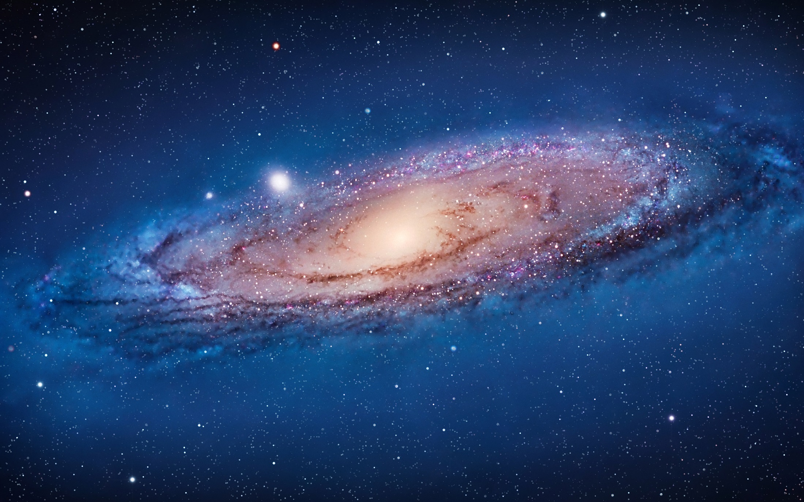

Vesolje je ogromno in polno skrivnosti, med najbolj zanimivimi objekti pa so prav galaksije. Galaksije so veliki sistemi zvezd, plina, prahu in drugih nebesnih teles, ki jih skupaj povezuje gravitacija.
Tudi naše Sonce in celotno Osončje sta del galaksije, imenovane Mlečna cesta ali Rimska cesta.
Na tej spletni strani boste lahko raziskali:
kaj so galaksije,
kako so nastale,
kako so zgrajene,
katere vrste galaksij poznamo,
kako se galaksije gibljejo in spreminjajo skozi čas,
ter kako prihaja do trkov in združevanja galaksij.
Vsebina je namenjena učencem osnovne šole, primerna pa je tudi za vse, ki jih zanima astronomija in raziskovanje vesolja.
S pomočjo spletne strani boste spoznali, da galaksije niso mirujoči objekti, ampak se neprestano razvijajo, premikajo in spreminjajo. Vesolje je zato živahen in dinamičen prostor, ki ga znanstveniki še danes raziskujejo.